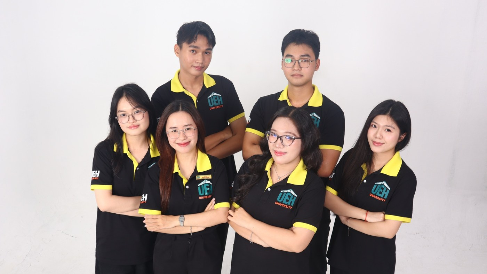

Ban Tổ chức - Xây dựng
Nền tảng vận hành của Liên Chi hội
Phụ trách công tác hành chính, nhân sự và triển khai hoạt động nội bộ; đồng thời góp phần xây dựng một tập thể vững mạnh, đoàn kết và chuyên nghiệp.
Mô tả công việc
- Tổ chức Đại hội, Hội nghị các cấp trực thuộc.
- Quản lý hồ sơ, hỗ trợ kế hoạch/hợp đồng, lưu trữ văn bản.
- Phụ trách tìm kiếm Cộng tác viên Ban Chuyên môn.
- Tổ chức tập huấn, hoạt động nâng cao nhận thức và gắn kết nhân sự.
- Xây dựng nội dung cho kênh truyền thông nội bộ.
Giá trị nhận được
- Nâng cao kỹ năng quản lý nhân sự.
- Phát triển kỹ năng mềm và chuyên môn.
- Rèn tư duy quy tắc, chuẩn mực và trách nhiệm.
- Tích lũy kinh nghiệm tổ chức chương trình, sự kiện.
Tiêu chí
- Cẩn thận, chỉn chu, chủ động sáng tạo.
- Thái độ tích cực, trách nhiệm, cầu tiến.
- Biết Word và Google Workspace cơ bản.
- Biết chỉnh sửa hình ảnh/video là một lợi thế.